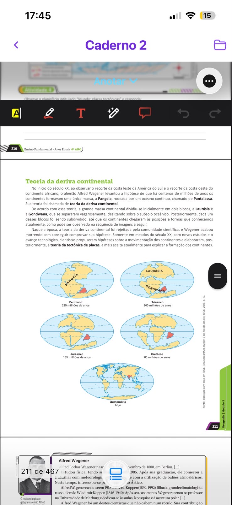
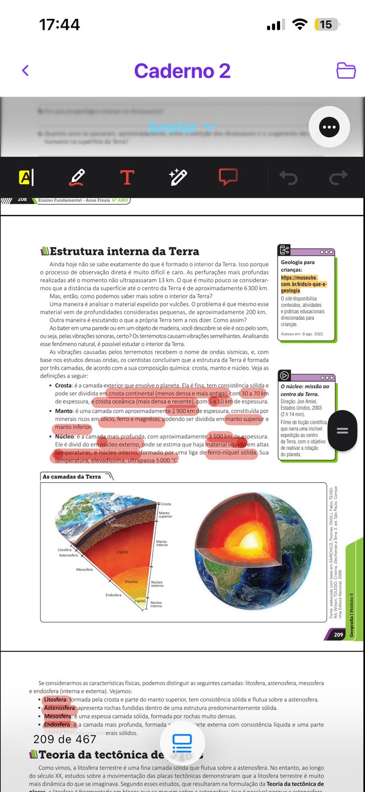
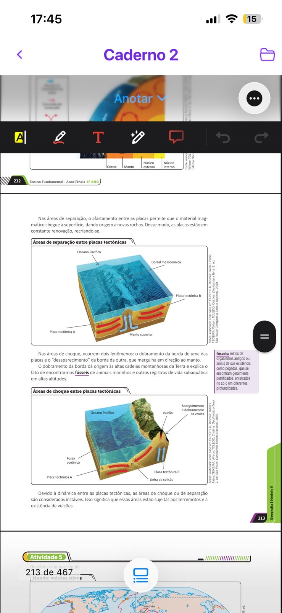
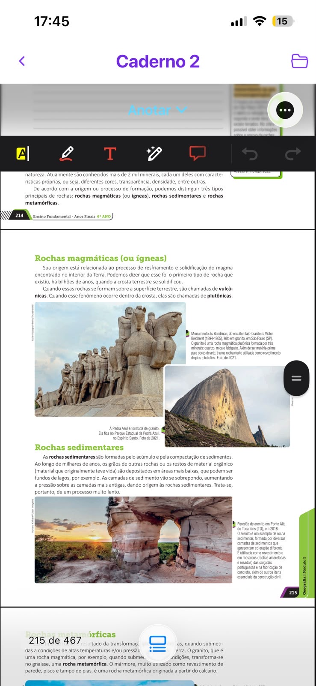
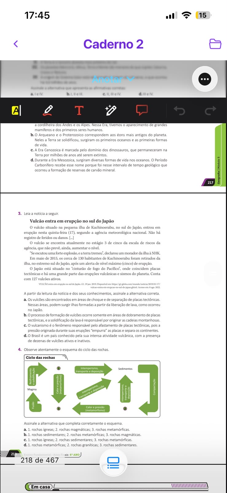
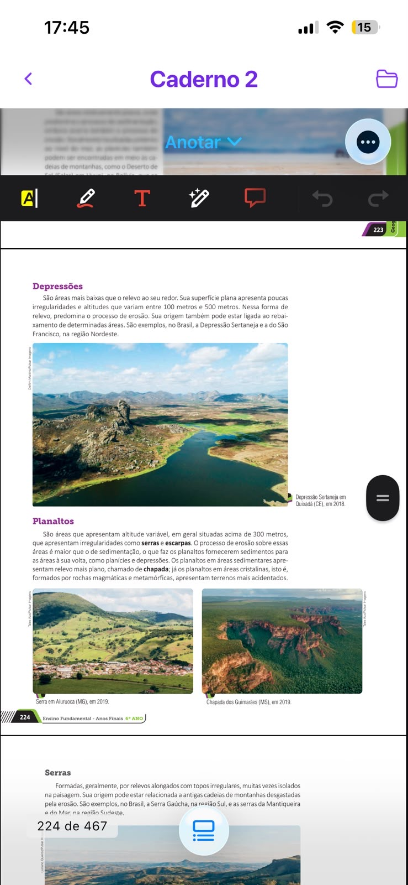
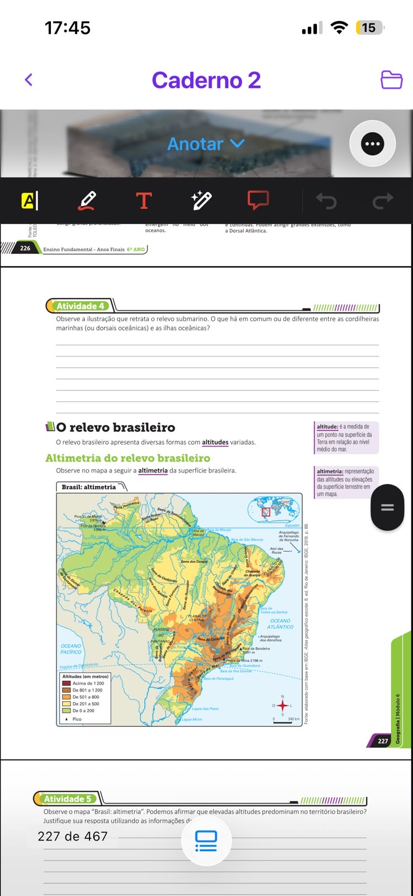
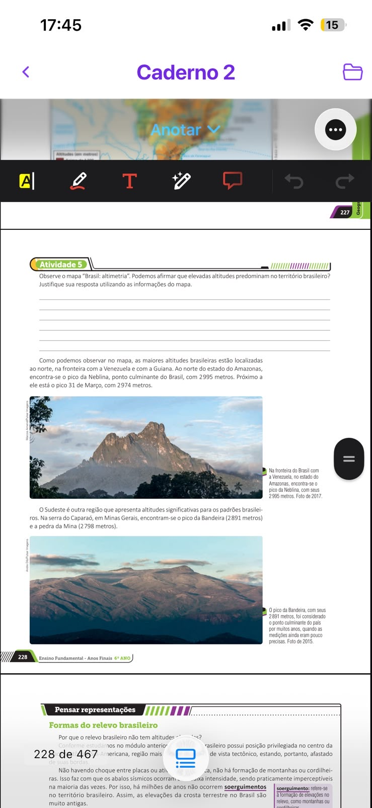

1. Quem propôs a Teoria da Deriva Continental no início do século XX?
Resposta: Alfred Wegener
Explicação: Alfred Wegener (1880–1930) observou o encaixe das costas e propôs a Pangeia.
Pedro · 6º ano · Módulos 5 e 6 do Caderno 2
Progresso: 0% Nenhuma seção concluída
Alfred Wegener observou que as costas da América do Sul e da África se encaixam. Ele propôs que, há cerca de 225 milhões de anos, existia um supercontinente chamado Pangeia, rodeado pelo oceano Pantalassa. Depois veio a divisão em Laurásia (norte) e Gondwana (sul), até chegarmos aos continentes atuais.

Por composição química: crosta (continental ou oceânica), manto e núcleo (externo líquido e interno sólido de ferro-níquel). Por características físicas: litosfera, astenosfera, mesosfera e endosfera. A litosfera é fragmentada em placas tectônicas.

Nas áreas de separação, as placas se afastam e o magma forma novas rochas (dorsais meso-oceânicas). Nas áreas de choque, ocorrem dobramentos (montanhas) ou subducção (uma placa mergulha sob a outra). Essas regiões são instáveis: terremotos e vulcões são comuns. O Brasil fica no interior de uma placa — por isso quase não tem vulcões ativos.

| Tipo | Como se forma | Exemplo |
|---|---|---|
| Magmática (ígnea) | Resfriamento do magma | Granito |
| Sedimentar | Compactação de sedimentos | Arenito |
| Metamórfica | Calor e pressão sobre outras rochas | Gnaisse, mármore |


Principais formas: planícies (áreas baixas e planas), depressões (100–500 m, predomina erosão), planaltos (acima de 300 m, com serras e escarpas), serras (relevos alongados) e escarpas (declives abruptos entre formas de relevo).

A altimetria representa as altitudes no mapa. No Brasil, altitudes baixas (0–500 m) predominam. Os pontos mais altos: Pico da Neblina (2.995 m, AM) e Pico da Bandeira (2.891 m, MG). O Brasil não tem montanhas muito altas porque está no centro da placa Sul-Americana, longe de colisões entre placas.


Se a rocha se formou pelo resfriamento do magma, é magmática (ex.: granito).
Se são grãos compactados ao longo do tempo, é sedimentar (ex.: arenito).
Se outra rocha foi alterada no interior da Terra, é metamórfica (ex.: granito → gnaisse).
Conclusão: No ciclo das rochas, esses tipos se transformam continuamente por intemperismo, compactação, metamorfismo e fusão.
Resposta: Alfred Wegener
Explicação: Alfred Wegener (1880–1930) observou o encaixe das costas e propôs a Pangeia.
Resposta: Pangeia e Pantalassa
Explicação: Pangeia era o supercontinente; Pantalassa, o oceano que o rodeava.
Resposta: Crosta
Explicação: A crosta é a camada sólida externa, continental ou oceânica.
Resposta: Dorsal meso-oceânica
Explicação: Na separação, magma sobe e forma novas rochas nas dorsais meso-oceânicas.
Resposta: Gnaisse
Explicação: Granito (magmática) → gnaisse (metamórfica) sob calor e pressão.
Resposta: Rocha magmática
Explicação: Magma que resfria e solidifica forma rocha magmática (ígnea).
Resposta: Verdadeiro
Explicação: Verdadeiro. A UAI reclassificou Plutão em 2006.
Resposta: Pico da Neblina
Explicação: Pico da Neblina (AM) — 2.995 m, na fronteira com Venezuela.
Resposta: Altitudes entre 0 e 500 m
Explicação: Verde e amarelo (0–500 m) cobrem a maior parte do mapa brasileiro.
Resposta: Depressão
Explicação: Depressões são áreas baixas em relação ao entorno; exemplo: Depressão Sertaneja.
Checklist (não corrige automaticamente):
Resposta esperada: Porque está no interior da placa Sul-Americana, longe das bordas de colisão ou separação.
Checklist (não corrige automaticamente):
Resposta esperada: Magmática (granito), sedimentar (arenito), metamórfica (mármore ou gnaisse).
Esta seção é destinada a pais, mães ou responsáveis. Fica separada da experiência principal do aluno.
Exercício geo-pe-011: Deve mencionar posição central na placa tectônica e ausência de colisões ativas.
Resposta esperada: O Brasil está no meio da placa Sul-Americana, longe das bordas onde ocorrem colisões e vulcanismo intenso.
Exercício geo-pe-012: Deve citar três tipos de rochas e um exemplo de cada.
Resposta esperada: Magmática (granito), sedimentar (arenito), metamórfica (mármore ou gnaisse).
geo-pe-001: Alfred Wegener
geo-pe-002: Pangeia e Pantalassa
geo-pe-003: Crosta
geo-pe-004: Dorsal meso-oceânica
geo-pe-005: Gnaisse
geo-pe-006: Rocha magmática
geo-pe-007: Verdadeiro
geo-pe-008: Pico da Neblina
geo-pe-009: Altitudes entre 0 e 500 m
geo-pe-010: Depressão
geo-pe-011: Porque está no interior da placa Sul-Americana, longe das bordas de colisão ou separação.
geo-pe-012: Magmática (granito), sedimentar (arenito), metamórfica (mármore ou gnaisse).